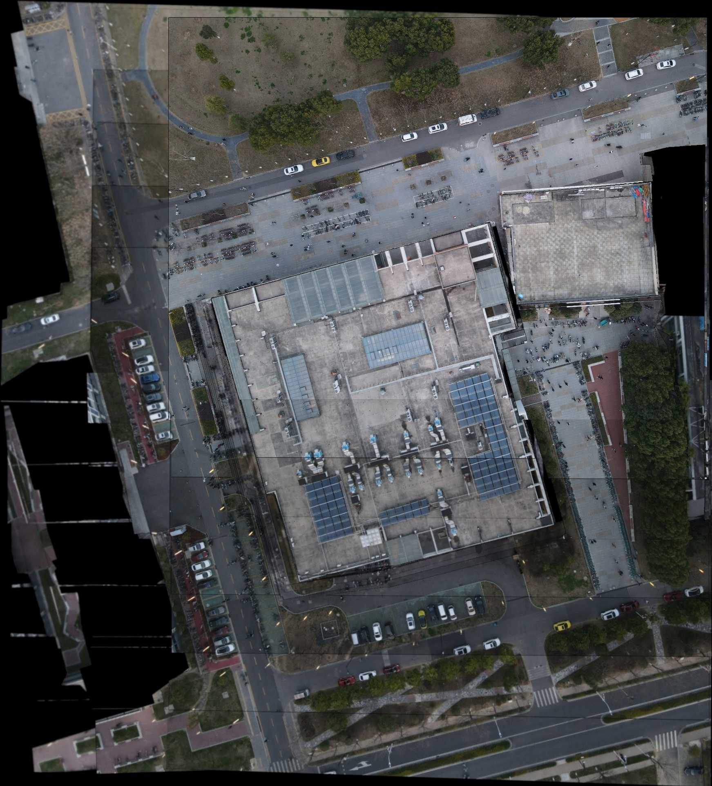

UAV image stitching by estimating Orthographic Projection with RGB cameras
My experiments:
Experiment 1, dormitary in Southeast University
source images of this stitching result are:( will be uploaded soon )
Experiment 2, canteen of Taoyuan in Southeast University
